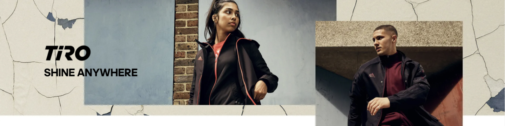

My life is beautiful
With women’s adidas Tiro tracksuits, comfort and sleek style go hand-in-hand. Streamlined essentials that started out as warmups have transcended the sports world to strut their stuff throughout the city. Your busy schedule keeps you on the move and Tiro gear is made to keep up. From everyday must-haves like track jackets and hoodies to workout-ready tops and shorts, you’ll have everything you need to take on your day with confidence. Soft breathable fabric is flexible for any activity, with a modern athletic look that always turns heads. On a hot day or at the gym, AEROREADY technology wicks sweat to keep you dry and comfortable.
With a variety of colors in sizes made for all bodies, you can create an outfit that goes with anything and everything in your closet while delivering all-day comfort. Women’s Tiro pants and joggers have a tapered design that really lets you show off your sneaker heat. Keep things low-key and subtle with neutral black and white colorways or highlight your bold fashion sense in reds, greens and pinks. Tiro Pride styles make a clear statement with vibrant, colorful accents. Find women’s Tiro tracksuits, hoodies, and more that fit your lifestyle at adidas.
